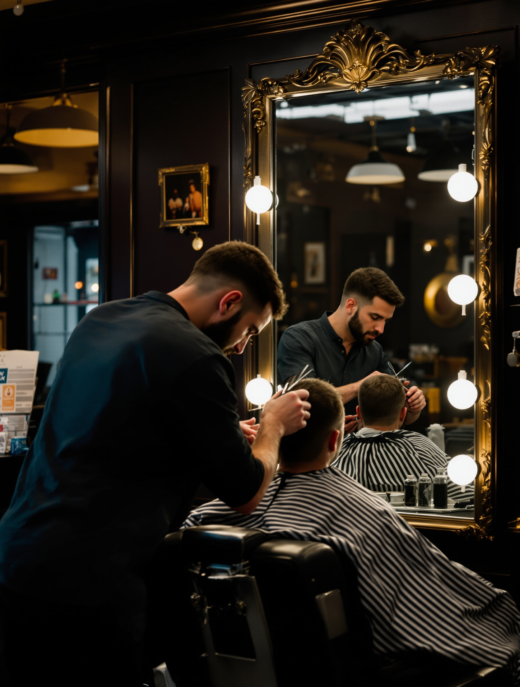
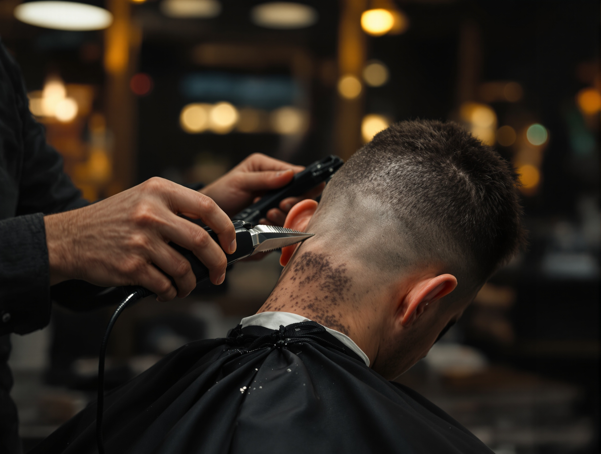
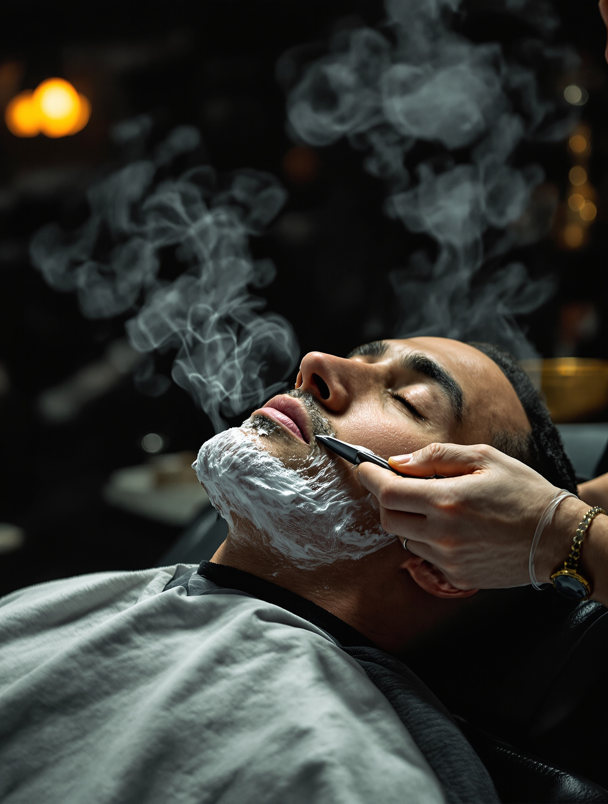
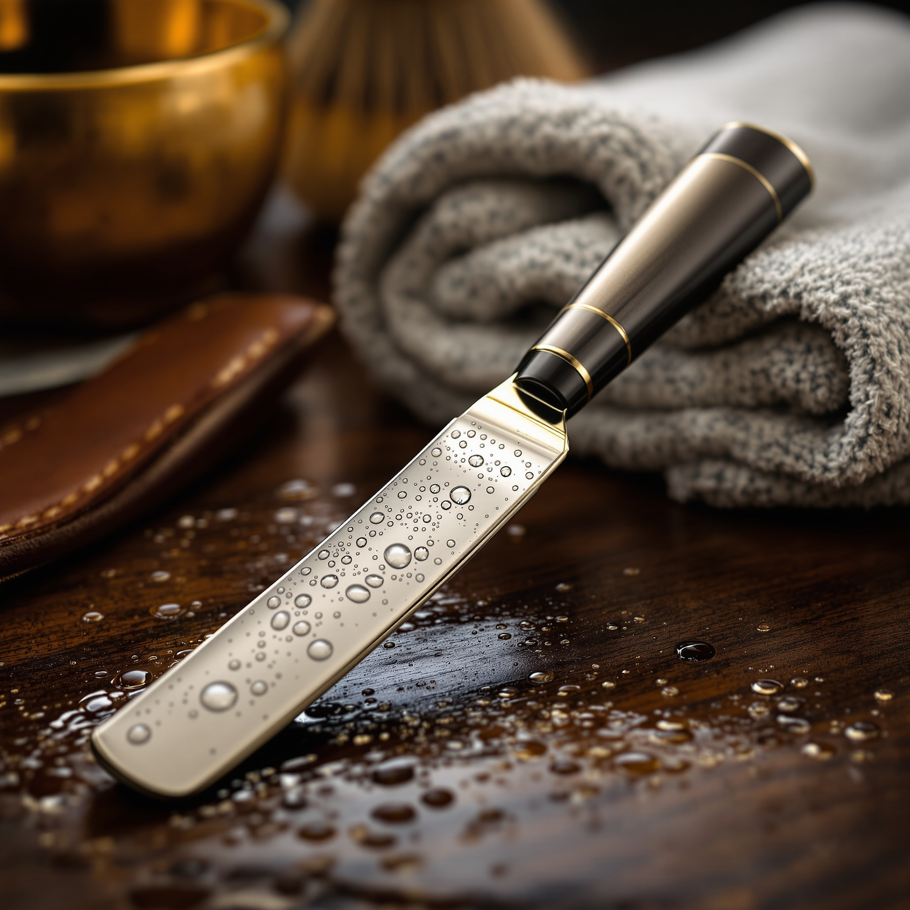

Chi c’è dietro le poltrone

Due fratelli,
una bottega
Siamo in due. Due fratelli, due poltrone.
Nessun barbiere di passaggio, nessun roster che cambia ogni mese. Chi impara la tua testa è quello che continua a tagliartela.
Il taglio che ti piace non dipende da chi trovi quel giorno. Ci siamo sempre gli stessi due.
È la promessa che sta nel nome — la conduzione familiare che una catena, con la sua sedia diversa ogni volta, non può mantenere.
Il servizio & i prezzi
Cosa facciamo, e quanto costa
Taglio, rasatura col rasoio, barba, panno caldo. Il listino è qui, in chiaro: niente da chiedere, niente da indovinare.

-
01Taglio
Forbici e macchinetta. Sfumatura o classico, rifinito col rasoio.
€ 22
-
02Rasatura col rasoio
Rasoio a mano libera e panno caldo. Il rituale completo.
€ 25
-
03Barba
Regolata e rifinita, contorni netti col rasoio.
€ 15
-
04Taglio + barba
Il completo: taglio e barba nella stessa poltrona.
€ 32
-
05Panno caldo
Il panno caldo prima della lama. Da aggiungere a taglio o barba.
+ € 8
-
06Taglio bimbo
Per i più piccoli, con calma e senza fretta.
€ 16
Prezzi indicativi — confermali in negozio o al telefono. Ci adattiamo al taglio.
Il posto
La bottega
Due poltrone, gli specchi, l’ottone, il legno scuro.
Un posto caldo dove ci si siede con calma. Gli attrezzi sono in ordine, la luce è quella giusta, e non c’è mai fretta.
Se non ci sei mai stato
La prima volta
Cambiare barbiere mette un po’ d’imbarazzo. Ecco come va, così sai già cosa aspettarti.
-
La poltrona
Ti siedi, ci dici come lo porti di solito. Ti ascoltiamo prima di prendere in mano le forbici.
-
Il panno caldo
Prima della lama, il panno caldo. Prepara la pelle e fa parte del mestiere, non è un extra da spa.
-
Il rasoio
Rasatura col rasoio a mano libera, contorni netti. Poi la prossima volta ci ricordiamo com’era, e ripartiamo da lì.


La reputazione
Il registro
Media su Google Maps
Non ci inventiamo recensioni. Il punteggio è quello, pubblico, e resta lì costante negli anni — proprio perché siamo sempre gli stessi due.
- Lo stesso taglio, ogni voltaLa cosa che torna più spesso: la costanza chi ci prova la nota.
- Barbieri che ti ricordanoCi ricordiamo com’era l’ultima volta, e ripartiamo da lì.
- Rasatura fatta come si deveIl rasoio a mano libera e il panno caldo, senza fretta.
Riflessioni ricorrenti dai giudizi pubblici, riassunte — non citazioni attribuite a singole persone.
Prenota & trovaci
Passa in bottega
Non c’è un modulo online: si prenota al telefono, come si è sempre fatto. Chiamaci e ti diamo l’orario.
Dove siamo
Via Cesare da Sesto, 32
20099 Sesto San Giovanni (MI)
Alle porte di Milano
Quando siamo aperti
Ora chiuso · apre giovedì alle 09:30
| Lunedì | Chiuso |
| Martedì | 09:30 – 19:00 |
| Mercoledì | 09:30 – 19:00 |
| Giovedì | 09:30 – 19:00 |
| Venerdì | 09:30 – 19:00 |
| Sabato | 09:00 – 18:00 |
| Domenica | Chiuso |
Orari indicativi — lo stato di oggi è aggiornato; per gli orari della settimana conferma al telefono.
Telefono